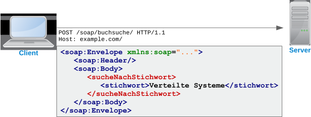

Klassische Webanwendungen besitzen keine Trennung zwischen Frontend und Backend,
sondern nutzen den Server auch zur Generierung des HTML-Codes der Benzeroberfl√§che. üñåÔ∏è
REST-Webservices erlauben uns stattdessen, Frontend und Backend getrennt voneinader
zu entwickeln. In diesem Kapitel lernst du wie.
Dieses Beispiel zeigt ein großes Webportal mit mehreren, von der restlichen Anwendungslogik entkoppelten Webfrontends.
Zur besseren Skalierung werden getrennte Server für die Webfrontends (sog. „Webcontainer"¹) und das Backend genutzt.
Im Backend werden zusätzlich die Dienste fremder Anbieter per Webservice integriert.
¹ Vollwertige Jakarta EE-Applikationsserver bestehen im Grunde genommen aus nichts anderem als einem
Webcontainer und einem EJB-Container, wobei der Webcontainer die Servlet- und webbezogenen APIs zur
Verfügung stellt und der EJB-Container den Rest. Wenn man aber weiß, dass man die Funktionen des EJB-Containers
nicht benötigt, kann man den Webcontainer auch separat installieren.
Sehr häufig werden Webservices dazu genutzt, B2B-Szenarios zwischen mehreren Unternehmen abzubilden, wofür ein Unternehmen
Webservices bietet, die von seinen Kunden und Lieferanten aufgerufen werden können. Dadurch können die Systeme untereinander
Daten austauschen, um manuelle Prozessschritte zu eliminieren. Die Abbildung zeigt zum Beispiel, wie ein Gro√ükunde üêï eine
Bestellung bei einem Händler aufgibt, was wiederum zur automatischen Erteilung eines Produktions- und eines Lieferauftrags
bei zwei weiteren Unternehmen führt.
Der Server antwortet mit dem gewünschten Inhalt oder einer Fehlerseite
PUT
Neue Inhalte auf den Server hochladen
Der Inhalt der Datei muss im Request Body mitgeschickt werden
Der Server antwortet mit einer neuen HTML-Seite oder einer Fehlerseite
POST
Daten zur Verarbeitung an den Server schicken
Wird häufig verwendet, um vorhandene Daten auf dem Server zu aktualisieren
Der Server antwortet mit einer neuen HTML-Seite oder einer Fehlerseite
DELETE
Daten auf dem Server löschen
Die Anfrage darf keinen Request Body enthalten
Der Server antwortet mit einer neuen HTML-Seite oder einer Fehlerseite
Seltener verwendete Verben
HEAD, OPTIONS, TRACE, PATCH
1xx: Informationen
Zwischenmeldung, um die Verbindung aufrecht zu erhalten
Verhindert, dass die Verbindung durch einen Timeout vorzeitig beendet wird
2xx: Erfolgreicher Abschluss
Die Anfrage wurde erfolgreich bearbeitet
200 OK: Alles roger! Der Response Body beinhaltet die gew√ºnschten Daten üëåüèº
202 Accepted: Die Anfrage wurde empfangen, wird aber erst später bearbeitet
…
3xx: Umleitung
Es sind weitere Aktionen vom Client notwendig
300 Multiple Choice: Die Anfrage war nicht eindeutig genug
301 Moved Permanently: Umleitung des Clients auf eine andere URL
…
4xx: Client Fehler
Der Client hat etwas falsch gemacht; die Verarbeitung wird abgelehnt
400 Bad Request: Ungültige bzw. fehlerhafte Anfrage
401 Unauthorized: Keine Berechtigung für diese Aktion
403 Forbidden: Die Aktion ist prinzipiell nicht erlaubt
404 Not Found: Der gesuchte Inhalt wurde nicht gefunden
…
5xx: Server Fehler
Anfrage kann aufgrund eines Serverfehlers nicht bearbeitet werden
500 Internal Server Error: Schwerer technischer Fehler, alles ist kaputt! üóëÔ∏è
501 Not Implemented: Die Funktion ist nicht verfügbar
503 Service Unavailable: Temporärer Fehler, bitte später nochmal versuchen
…
HTTP/0.9
Dies war die ursprüngliche von Tim Berners-Lee entwickelte HTTP-Version, wie sie 1991 veröffentlicht wurde.
In dieser Version gab es nur GET-Anfragen und noch keine Header Fields. Eine Anfrage bestand daher lediglich
aus einer Zeile:
GET /index.html
Die Antwort des Servers beinhalte nur den Inhalt der abgerufenen Datei, sonst nichts.
HTTP/1.0
1996 wurde HTTP/1.0 veröffentlicht. Ab hier haben die HTTP-Nachrichten den oben gezeigten Aufbau.
HTTP/1.1
Diese Version wurde 1999 veröffentlicht und brachte weitreichende Verbesserungen. Unter anderem
die Möglichkeit, die Verbindung zwischen zwei Anfragen offen zu halten. Denn zuvor wurde die Verbindung
nach jeder Antwort automatisch getrennt. Da aber gerade der Verbindungsaufbau bei TCP/IP sehr langsam ist,
führte dies zu langen Wartezeiten, wenn mehrere Dateien vom selben Server abgerufen werden mussten.
HTTP/2
2015 wurde HTTP/2 offiziell verabschiedet. In seinen Grundzügen basiert es auf dem von Google entwickelten
SPDY-Protokoll. Die Inhalte der HTTP-Nachrichten sind weitgehend gleich geblieben, jedoch werden sie nicht
mehr in der oben gezeigten Textform kodiert. Stattdessen kommt ein kompaktes und in vielen Dingen eindeutiger
spezifiziertes Binärformat zum Einsatz.¹
Als weitere größere Neuerung führt HTTP/2 Server Push ein, wodurch der Server beim Abruf einer
HTML-Seite selbstständig weitere Dateien an den Browser schicken kann. Somit können Stylesheets, Skripte
und Bilder schon an den Browser geschickt werden, bevor dieser überhaupt weiß, dass er sie benötigen wird.
Stand 2017 hat sich HTTP/2 noch nicht gegen HTTP/1 durchgesetzt. Die meisten Webseiten verwenden weiterhin
HTTP/1. Man kann aber davon ausgehen, dass sich das im Laufe der Jahre ändern wird.
¹ Beispielsweise war bei HTTP/1.x nie definiert, welche Bytefolge ein Zeilenende markiert.
Bei den URLs für einen REST-Webservice wird häufig zwischen Collections und Ressourcen
unterschieden. Eine Collection ist dabei immer eine Sammlung von Einträgen, die als Ganzes
abgerufen werden kann. Oftmals können beim Abruf dann noch Query Parameter mitgegeben
werden, um die Liste einzugrenzen.
Eine einzelne Ressource erkennt man daran, dass in der URL ihr Schlüsselwert enthalten ist.
Im Gegensatz zu den Collections schickt der Server dann genau ein Objekt mit den Daten der
angeforderten Ressource.
Die Anlage von Ressourcen erfolgt häufig, indem ihre JSON-Repräsentation als POST-Anfrage
an die Collection geschickt wird. Der Server speichert daraufhin den Eintrag und schickt
die gespeicherten Daten, nun um die Key-Werte angereichert, zurück.
Im Gegensatz zu SOAP besitzen REST-Webservices meistens keine formale Beschreibung.
Viele REST-API-Anbieter liefern daher vorgefertigte SDKs zum Aufruf ihrer Services
mit verschiedenen Sprachen. Im Javaumfeld hat man sich stattdessen das
WADL-Format
als eine Art „WSDL für beliebige Webanwendungen” überlegt. Es beschreibt die URLs
eines Webservices und mit welchen HTTP-Methoden sie aufgerufen werden.
⚛️
Welche URLs besitzt der Webservice?
⚛️
Welche URL-Parameter können einer URL mitgegeben werden?
⚛️
Welche HTML-Formularfelder können an die URL geschickt werden?
⚛️
Welche Daten können mit POST, PUT oder PATCH an die URL geschickt werden?
⚛️
Welche HTTP-Statuscodes kann die Antwort enthalten?
⚛️
Welche Daten werden bei welchem Statuscode zurückgeschickt?
Beispiel
<application xmlns="http://wadl.dev.java.net/2009/02"
xmlns:xs="http://www.w3.org/2001/XMLSchema">
<!--
Hier könnten XML-Schema-Anweisungen stehen, mit welchen die Struktur
der ausgetauschten Daten formal definiert wird, wenn der Webservice
XML als Datenformat verwendet. Dieser hier nutzt allerdings JSON. üôÑ
-->
<grammars/>
<!--
Die Basis-URL des Webservice lautet
http://localhost:8080/TheXFiles/rest/
-->
<resources base="http://localhost:8080/TheXFiles/rest/">
<!--
Nachfolgend wird die URL
http://localhost:8080/TheXFiles/rest/xfiles2018/
beschrieben.
-->
<resource path="xfiles2018">
<!--
Schicken wir eine GET-Anfrage an die URL, wird dadurch die Methode
findEpisodes() aufgerufen.
-->
<method id="findEpisodes" name="GET">
<!--
Optional können wir der Methode einen Parameter namens "query"
mitgeben. Der Parameter ist ein String und muss als URL-Parameter
an die URL angehängt werden. Zum Beispiel so:
http://localhost:8080/TheXFiles/rest/xfiles2018/?query=My%20Struggle
-->
<request>
<param name="query" style="query" type="xs:string"/>
</request>
<!--
Als Antwort erhalten wir dann einen JSON-String.
-->
<response>
<representation mediaType="application/json"/>
</response>
</method>
<!--
Eine POST-Anfrage würde hingegen die Methode saveNewEpisode() zur
Anlage eines neuen Datensatzes aufrufen.
-->
<method id="saveNewEpisode" name="POST">
<!--
Als Anfrage müssen wir einen JSON-String mitschicken.
-->
<request>
<representation mediaType="application/json"/>
</request>
<!--
Im Gegenzug schickt uns der Server ein JSON zurück.
-->
<response>
<representation mediaType="application/json"/>
</response>
</method>
<!--
Mit der URL http://localhost:8080/TheXFiles/rest/xfiles2018/{id}/
können wir auf einzelne Datensätze zugreifen. {id} ist dabei ein
Platzhalter, der mit der ID des Datensatzes ersetzt werden muss.
-->
<resource path="{id}">
<!--
Die ID kann ein beliebiger String sein. Häufig kommt es aber
auch vor, dass es sich um einen Long oder irgendeinen anderen
primitiven Datentypen handeln muss.
-->
<param name="id" style="template" type="xs:string"/>
<!--
Schicken wir eine GET-Anfrage an die URL, wird dadurch die Methode
getEpisode() aufgerufen. Sie schickt uns eine einzelne Episode im
JSON-Format zurück.
-->
<method id="getEpisode" name="GET">
<response>
<representation mediaType="application/json"/>
</response>
</method>
<!--
Schicken wir eine DELETE-Anfrage, wird stattdessen die Methode
deleteEpisode() aufgerufen. Auch sie schickt uns die gelöschte
Episode im JSON-Format zurück.
-->
<method id="deleteEpisode" name="DELETE">
<response>
<representation mediaType="application/json"/>
</response>
</method>
<!--
Schicken wir eine PUT-Anfrage, können wir dadurch die Methode
updateEpisode() zum Aktualisieren eines Datensatzes aufrufen.
Hierfür müssen wir ein JSON mit den Episodendaten hinschicken
und bekommen ein JSON mit den gespeicherten Daten zurück.
-->
<method id="updateEpisode" name="PUT">
<request>
<representation mediaType="application/json"/>
</request>
<response>
<representation mediaType="application/json"/>
</response>
</method>
</resource>
<!-- http://localhost:8080/TheXFiles/rest/xfiles2018/{id}/ -->
</resource>
<!-- http://localhost:8080/TheXFiles/rest/xfiles2018/ -->
</resources>
<!-- http://localhost:8080/TheXFiles/rest/ -->
</application>
Anfrage und Antwort werden im SOAP-XML-Format kodiert und durch einen einfachen HTTP-Aufruf übertragen. Die aufgerufene URL, sowie
der genaue Inhalte der XML-Nachrichten ergibt sich aus der WSDL-Beschreibung. Der Aufruf erfolgt immer als POST-Anfrage.

SOAP
üêò
Eine URL für den gesamten Webservice
üêò
Ermöglicht den Aufruf beliebiger Methoden
üêò
Nutzt von HTTP lediglich das Verb POST
üêò
SOAP-XML als fest vorgegebenes Datenformat
üêò
Verbindliche WSDL-Beschreibung je Service
üêò
Häufigste Verwendung im Unternehmenskontext
REST
üêá
Je eine URL für eine Ressource¹
üêá
Bildet die üblichen CRUD-Operationen² ab
üêá
Nutzt alle Verben des HTTP-Protokolls
üêá
Beliebige Datenformate, in der Regel JSON
üêá
Optionale WADL-Beschreibung möglich
üêá
Häufigste Verwendung für Cloud, Web und Mobile
¹ Im Sinne eines einzelnen Datensatzes, zum Beispiel ein Artikel oder eine Bestellung.
Nun, welche Musik h√∂rst du gerne? üéº Hier hast du die einmalige Gelegenheit, sie √ºber einen REST-Webservice in eine Datenbank einzutragen. üòé
Hierfür musst du dir lediglich das Beispielprojekt von Moodle herunterladen und in Netbeans zum Laufen bekommen. Anschließend öffnet sich
eine kleine Seite im Browser, mit der du erste Versuche unternehmen kannst. Gehe dabei wie folgt vor:
Klicke jeden Link einmal an und schaue, was passiert.
Falls die Links mit der ID 10 keine Daten liefern, tausche die ID in der URL aus.
Schaue dir die WADL-Datei an und versuche, sie zu verstehen.
Importiere die WADL-Datei in SoapUI und teste die verschiedenen Webservice-Operationen.
Um einen neuen Song anzulegen, kannst du folgende JSON-Daten an den Server schicken:
Die untenstehende Zeichnung zeigt die wesentlichen Schritte, die bei der Entwicklung einer Jakarta-EE-Anwendung anfallen.
Die wichtigsten davon schauen wir uns anhand eines kleinen Fallbeispiels etwas genauer an.
Zunächst brauchen wir ein gutes Datenmodell, das nicht zu kompliziert aber dennoch flexibel ist. Unsere kleine Anwendung modelliert
eine Buchsammlung. Wir haben daher Entitäten wie Buch, Autor
oder Verlag, die in Beziehung zueinander stehen. Zusätzlich hat jeder Autor und jeder Verlag eine
Adresse.
In Javacode sieht das ganze ungefähr so aus. Die Details dazu schauen wir uns natürlich noch an.
@Entity
public class Buch implements Serializable {
@Id
private String isbn = "";
private String titel = "";
private String untertitel = "";
private BuchKategorie kategorie = BuchKategorie.UNBEKANNT;
private int anzahlSeiten = 0;
@ManyToMany
List<Autor> autoren = new ArrayList<>();
@ManyToOne
private Verlag verlag = null;
// Setter und Getter …
}
public enum BuchKategorie {
UNBEKANNT, BELLETRISTIK, FACHBUCH, SAMMELBAND, ZEITSCHRIFT;
}
@Entity
public class Autor implements Serializable {
@Id
@GeneratedValue
private long id;
private String vorname;
private String nachname;
private String titel;
@OneToOne
Adresse adresse = null;
@ManyToMany(mappedBy="autoren")
List<Buch> buecher = new ArrayList<>();
// Setter und Getter …
}
@Entity
public class Verlag implements Serializable {
@Id
@GeneratedValue
private long id;
private String name;
private String rechtsform;
@OneToOne
Adresse adresse = null;
@OneToMany(mappedBy="verlag")
List<Buch> buecher = new ArrayList<>();
// Setter und Getter …
}
@Entity
public class Adresse implements Serializable {
@Id
@GeneratedValue
private long id;
private String strasse = "";
private String hausnummer = "";
private String postleitzahl = "";
private String ort = "";
private String land = "";
// Setter und Getter …
}
Darauf aufbauend können wir nun Services definieren, die sinnvolle Funktionen rund um die Entitäten zur Verfügung stellen.
Im einfachsten Fall bieten wir die üblichen CRUD-Operationen: Create,
Read, Update und Delete.
@Stateless
public class BuchService {
@PersistenceContext
protected EntityManager em;
// Bücher selektieren
public Buch findByIsbn(String isbn) { … }
public List<Buch> findByAutor(Autor autor) { … }
public List<Buch> findByVerlag(Verlag verlag) { … }
public List<Buch> findByTitleContains(String title) { … }
// Neue Bücher speichern
public Buch saveNew(Buch buch) { … }
// Bücher Verlage ändern
public Buch update(Buch buch) { … }
public void delete(Buch buch) { … }
}
@Stateless
public class VerlagService {
…
}
@Stateless
public class AutorService {
…
}
Und last but not least eine schöne Benutzeroberfläche, entweder als serverseitige MVC-Webanwendung,
als clientseitige Webanwendung oder als Native Client. Oder jede beliebige Kombination daraus,
ganz wie du willst.
@WebServlet(urlPatterns={"/start/"})
public class StartPageServlet extends HttpServlet {
@EJB
BuchService buchService;
@EJB
AutorService autorService;
@EJB
VerlagService verlagService;
@Override
public void doGet(HttpServletRequest request, HttpServletResponse)
throws ServletException, IOException {
…
}
}